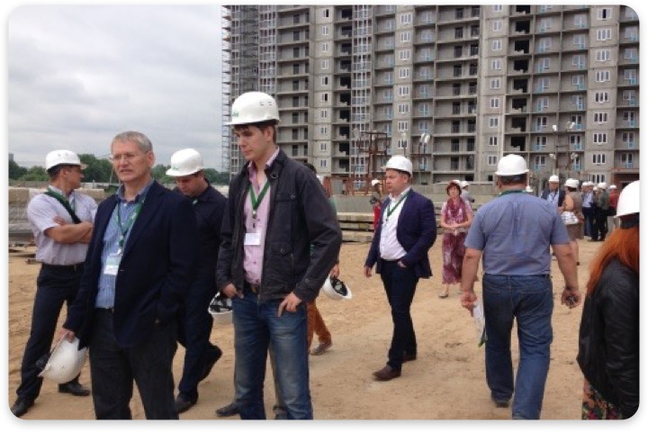
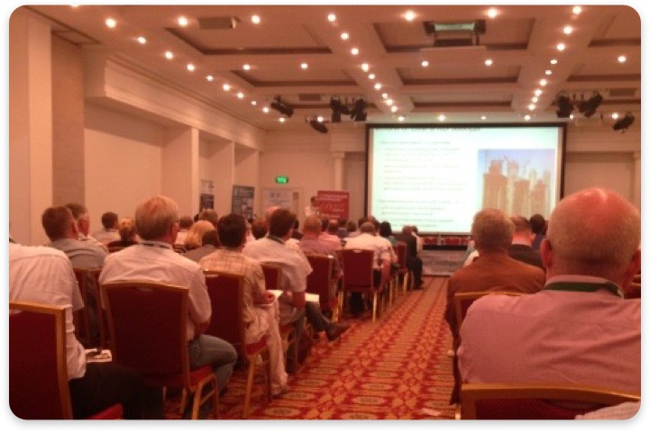
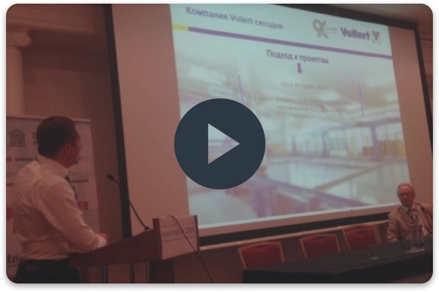

V Международная научно-практическая конференция
30 июня – 3 июля 2015 г. в Казани состоится V Международная научно-практическая конференция «Развитие крупнопанельного домостроения в России» InterConPan-2015.
Организаторами конференции выступили АО «ЦНИИЭП жилища» и объединенная редакция журналов «Строительные материалы» и «Жилищное строительство» при поддержке Министерства строительства, архитектуры и жилищно-коммунального хозяйства Республики Татарстан и группы компаний «АК БАРС Девелопмент»

V Международная научно-практическая конференция
Участники конференции посетили Казанский ДСК и строительство жилого комплекса «Светлая Долина».
Состоялась поездка в Набережные Челны с посещением домостроительного комбината ООО «Домкор-Индустрия» и жилых районов «Замелекесье» и «Красные Челны».
На пленарном и секционных заседаниях конференции «InterConPan-2015» заслушано 49 докладов, посвященных конкретным вопросам модернизации действующих домостроительных предприятий, выбору технологического оборудования, снижению энергоемкости производства, применению новых и традиционных материалов и конструктивных решений при выпуске изделий КПД.

На секции «Технология и оборудование предприятий ДСК и КПД» компания ТензоТехСервис представила свой доклад. Директор ТензоТехСервис Анисимов Илья Владимирович на примере модернизации Тюменского «Завода ЖБИ-3» gоказал, что начинать модернизацию производства ЖБИ изделий необходимо с решения вопроса обеспечения новых технологий качественной бетонной смесью. Рассказал о глубине проработки задачи модернизации БСУ компанией ТензоТехСервис.
Посмотрите видеозапись доклада:
